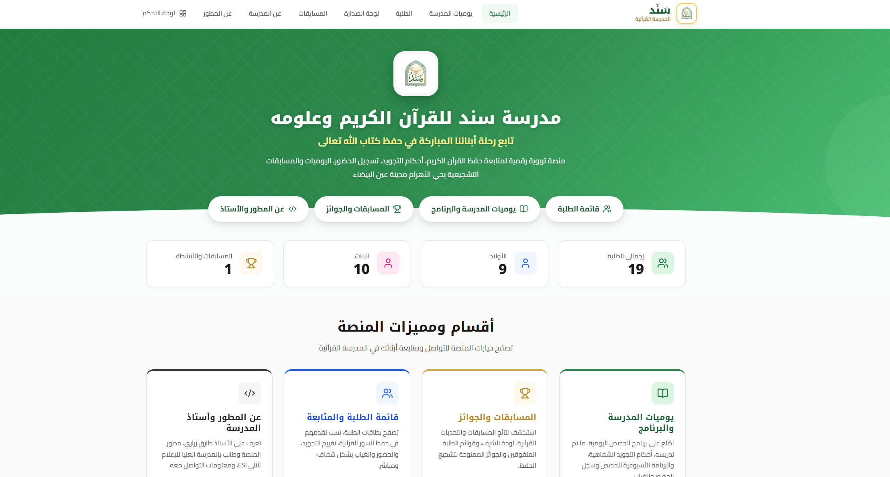
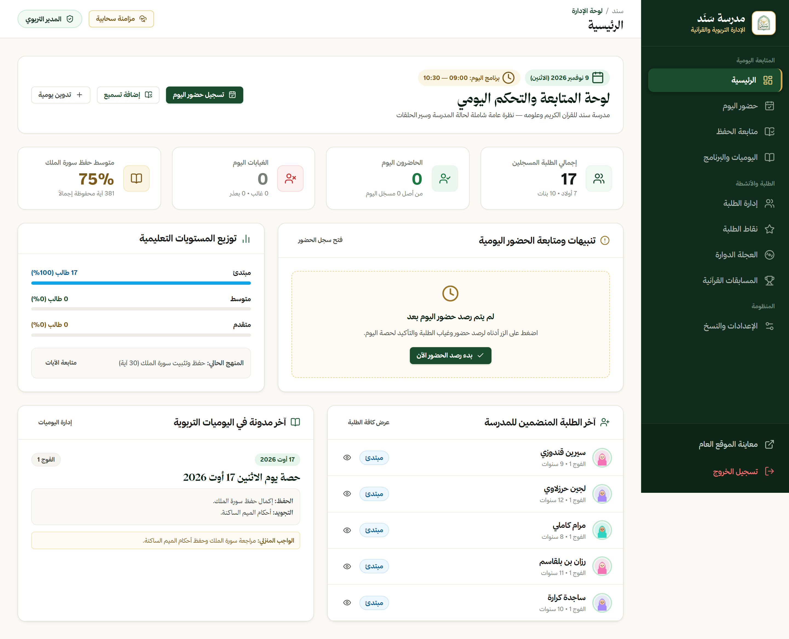
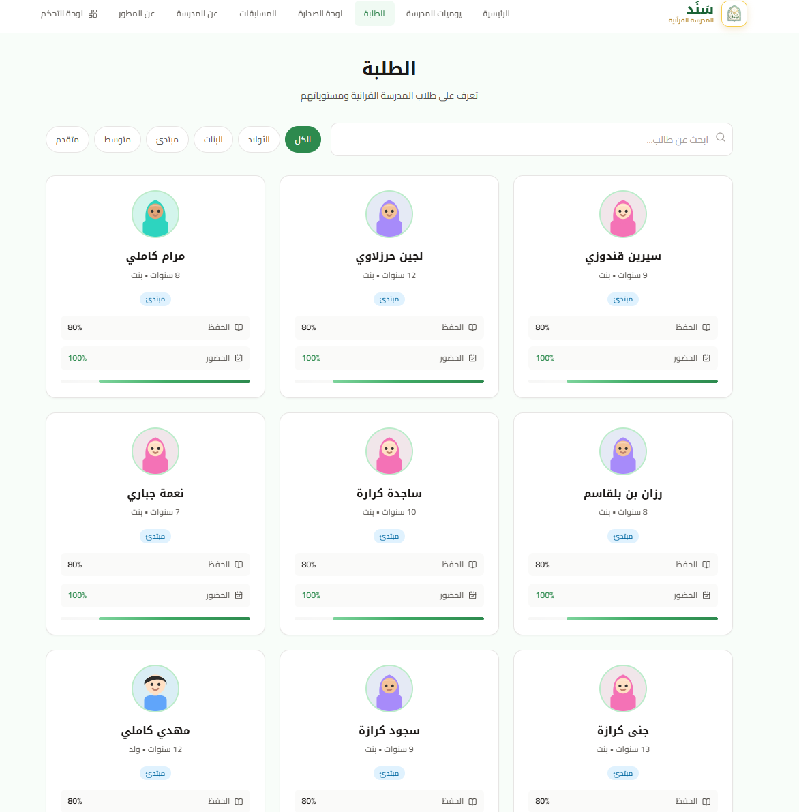
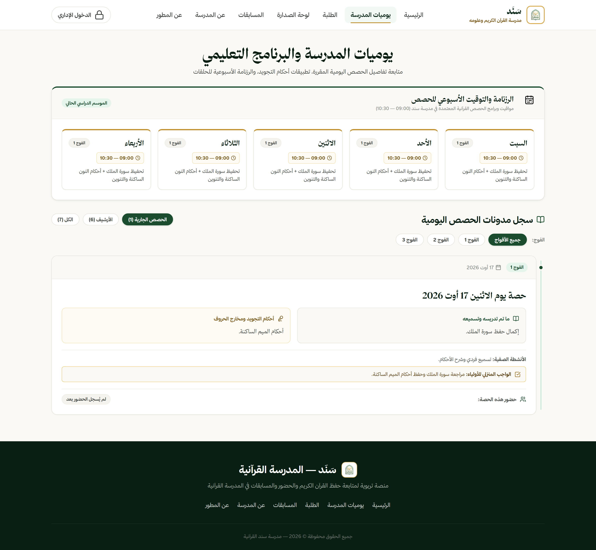
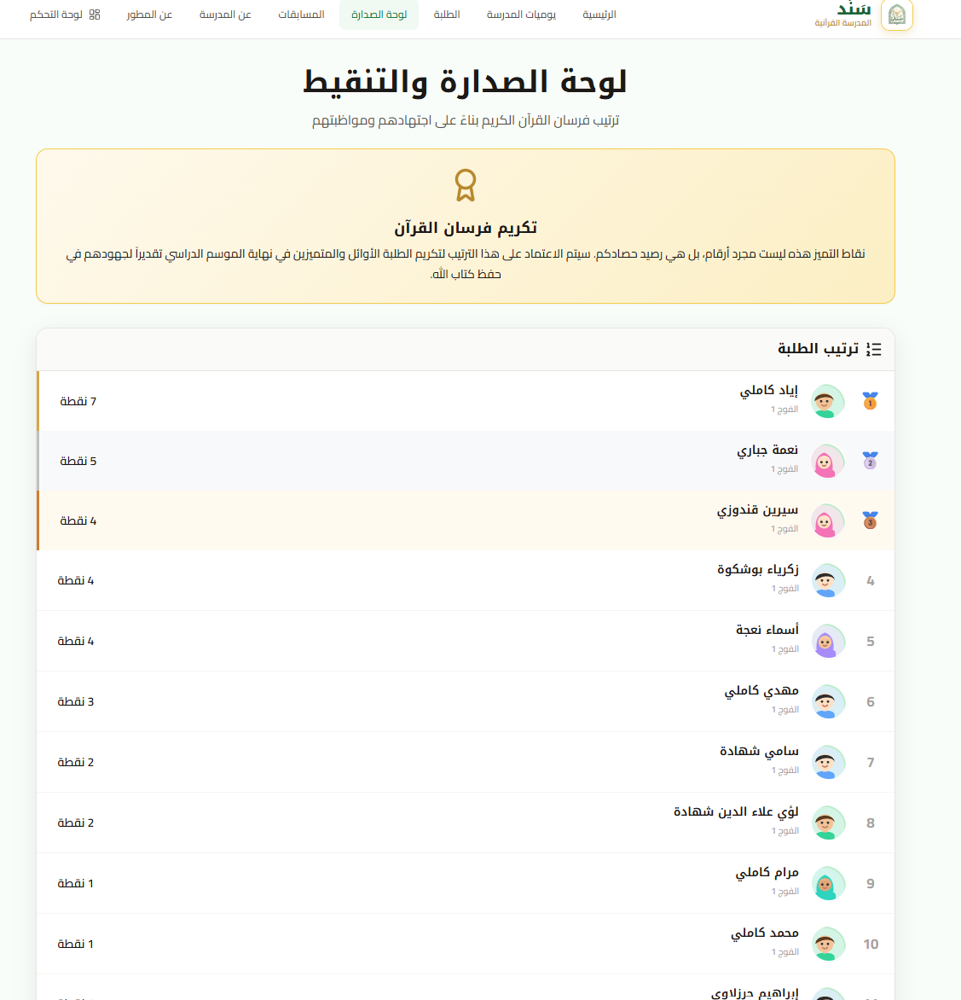

Sanad
منصة تعليمية مخصصة لرقمنة ومراقبة تقدم حفظ القرآن الكريم، الحضور، والمسابقات، بهدف سد الفجوة بين المعلمين والطلاب والإدارة.

تحدي التصميم
تعتمد المدارس القرآنية تقليدياً على الدفاتر الورقية لتسجيل تقدم الطلاب في الحفظ، الحضور، والملاحظات السلوكية. هذه الطريقة اليدوية تصعب على أولياء الأمور البقاء على اطلاع مستمر، وعلى الإداريين تتبع الأداء العام للفصول. كان التحدي هو ابتكار منصة رقمية تحافظ على الجوهر الروحي والتربوي لتعلم القرآن مع توفير أدوات حديثة لتتبع البيانات، تحفيز الطلاب بالتنافسية، وخلق اتصال سلس.
من يستخدم هذه المنصة؟
تخدم منصة Sanad ثلاث مجموعات رئيسية من المستخدمين لضمان اتصال متكامل بين التعلم والمراقبة والإدارة.
استراتيجية واجهة المستخدم والمميزات
المفكرة الرقمية
انعكاس رقمي حديث لدفتر متابعة القرآن التقليدي، يتيح للمعلمين تسجيل السور والآيات المحددة للحفظ والمراجعة.
الترتيب والتنافسية
تنفيذ نظام لوحة الصدارة وتوزيع النقاط بناءً على جودة التلاوة والمواظبة لتشجيع المنافسة الإيجابية بين الطلاب.
إدخال بيانات محسن
تبسيط واجهة المعلم لضمان أن تسجيل تقدم الطالب اليومي يستغرق بضع ثوانٍ فقط.
تجربة عربية أصيلة
تم تصميم الواجهة من البداية لتدعم القراءة من اليمين إلى اليسار (RTL)، مع استخدام أنماط تجربة مستخدم تناسب اللغة العربية.
ربط التقاليد بواجهة مستخدم حديثة
تم اختيار التوجه البصري لإثارة الشعور بالنمو الروحي، الثقة، والوضوح مع الالتزام بمبادئ تصميم منصات الـ SaaS الحديثة.
لوحة ألوان النمو
اللون الأساسي هو الأخضر الإسلامي (#2D8A4E)، الذي يرمز للنمو والتقاليد، ممزوجاً بالأبيض الصافي والرمادي الناعم للحفاظ على التركيز.
الطباعة العربية
استخدام خطوط Cairo و Noto Kufi Arabic لضمان مقروئية ممتازة لكل من مكونات واجهة المستخدم الحديثة والنصوص العربية التقليدية.
تخطيطات نظيفة
واجهة تعتمد على البطاقات مع ظلال خفيفة تخلق عمقاً بصرياً وتفصل بشكل أنيق بين المعلومات مثل السجلات اليومية والترتيب.
الأيقونات
استخدام أيقونات ناعمة، دائرية، وذات صلة ثقافية لجعل التصفح بديهياً وسلساً للمستخدمين من جميع الخلفيات التقنية.
المنصة النهائية
الصفحة الرئيسية
مقدمة ترحيبية نظيفة لمنصة Sanad، تسلط الضوء على رسالتها وميزاتها الأساسية.

لوحة تحكم الإدارة
مركز التحكم لإدارة المدرسة، يقدم رؤى سريعة لأعداد الطلاب والحلقات والأداء العام.

دليل الطلاب
سجل منظم بشكل جيد لعرض وإدارة الطلاب المسجلين، فصولهم، وحالتهم التعليمية.

المفكرة اليومية ولوحة الصدارة
الأدوات التعليمية الأساسية: المفكرة الرقمية لتتبع الحفظ والمراجعة اليومية، ولوحة ترتيب الفصل لتعزيز التفاعل والتنافس.


خفيف، يعمل بضعف الاتصال، وثنائي اللغة
سند تطبيق صفحة واحدة بتوجيه hash، مبني بـVite ووحدات JavaScript أصلية — دون إطار عمل ودون مكتبة واجهة ثقيلة. يبقى الحجم صغيراً على أجهزة المدارس، مع اكتمال تجربة الإدارة والواجهة العامة.
تخزين هجين
السجلات المنظمة في Supabase Postgres، والوسائط المرفوعة في Netlify Blobs، فتبقى قاعدة البيانات خفيفة والتخزين منخفض التكلفة.
مزامنة مؤجلة
تُكتب البيانات في localStorage أولاً، ثم يدفعها Netlify Function إلى السحابة بعد تأخير قصير، فتبقى الواجهة فورية على الاتصال الضعيف.
تطبيق واعٍ بالأدوار
موجّه hash واحد يخدم الصفحات العامة ولوحة الإدارة: الحضور، الحفظ، النقاط، المسابقات ولوحة الترتيب.
عربي RTL من البداية
الاتجاه والمسافات وعكس الأيقونات والخطوط تُعالج على مستوى التخطيط، فتكون الواجهة العربية هي التجربة الأساسية.